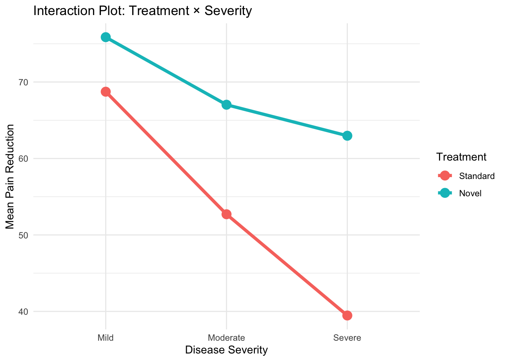
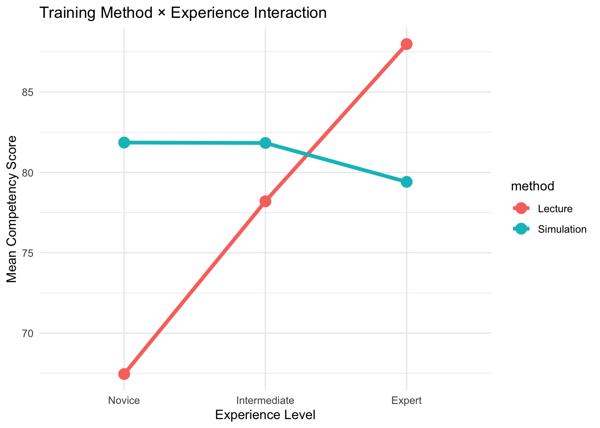
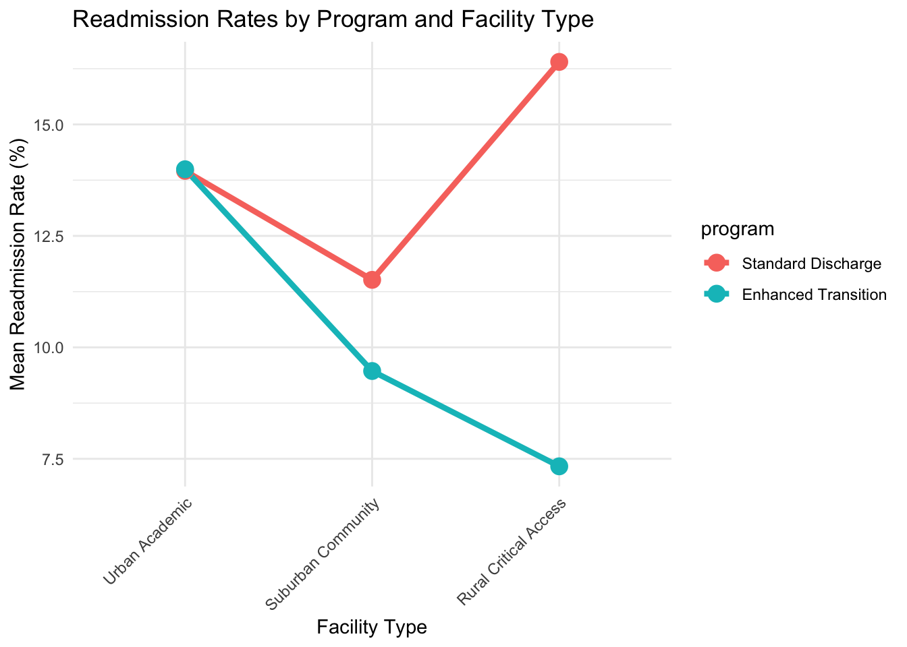
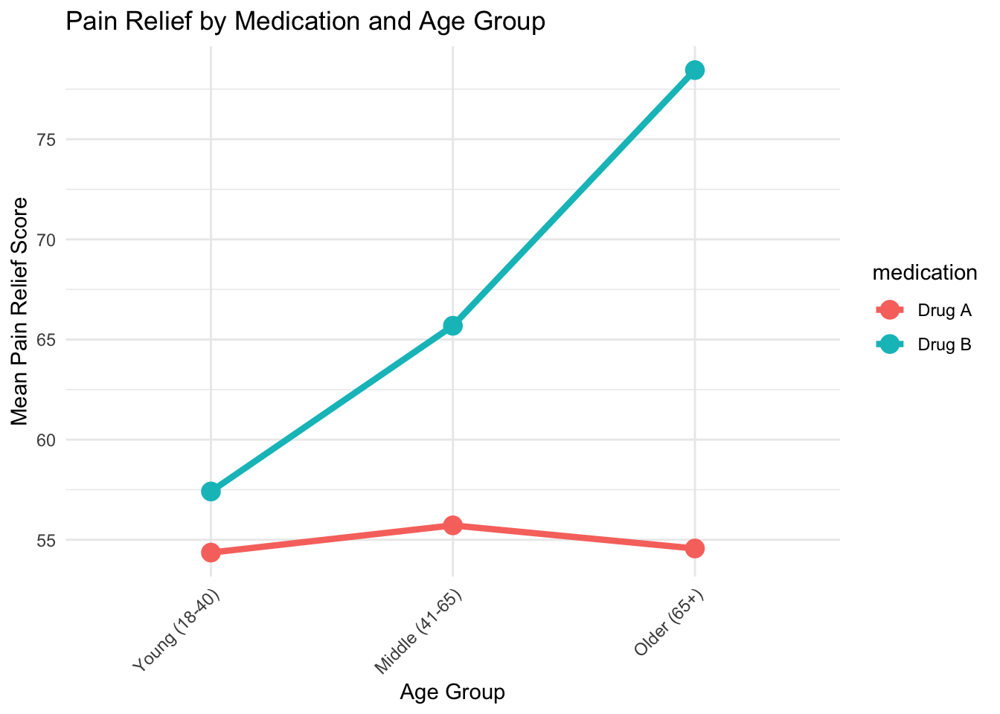
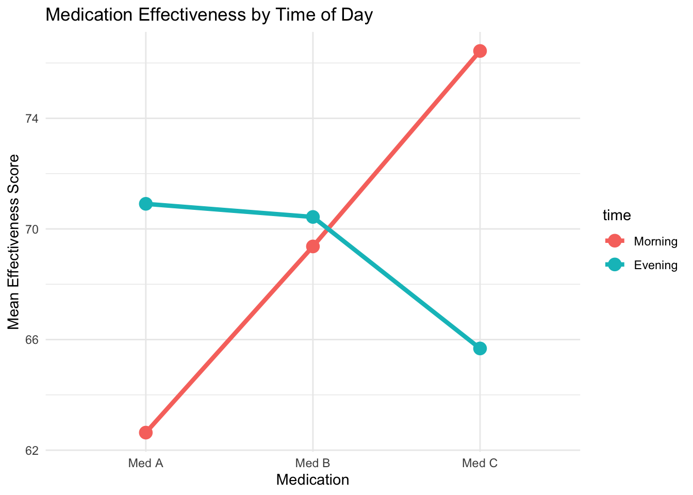
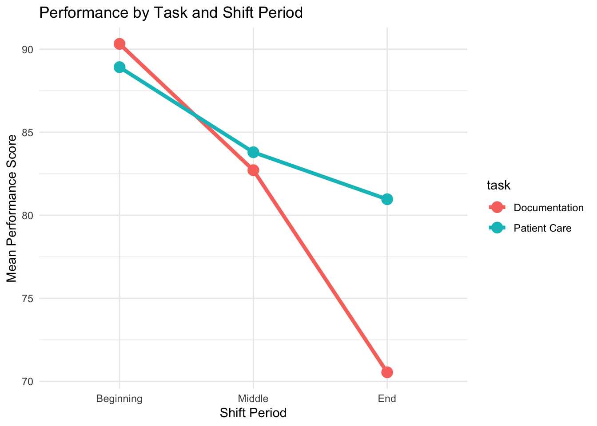
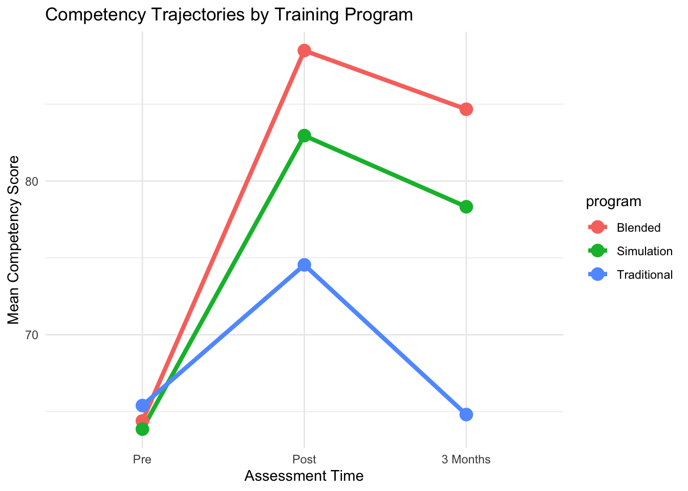
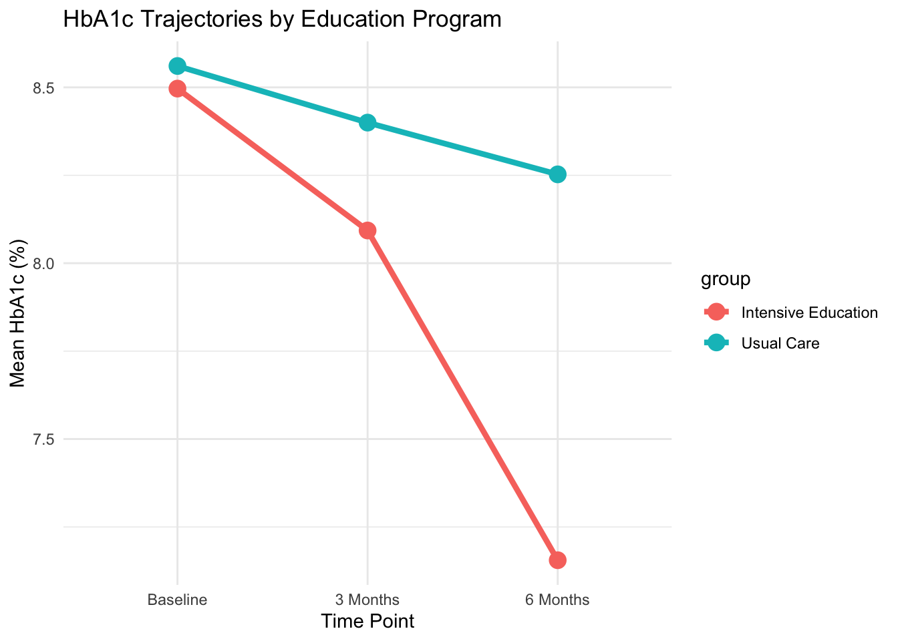
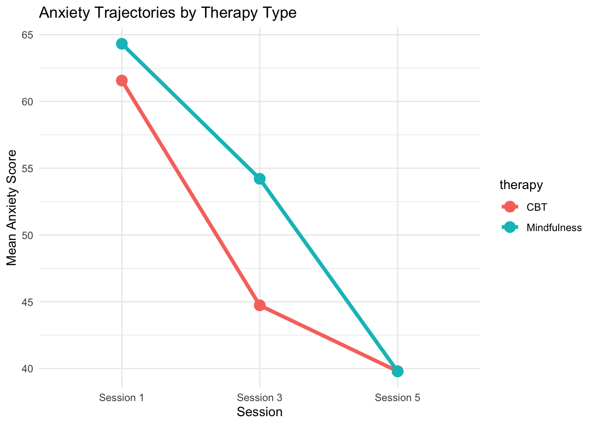
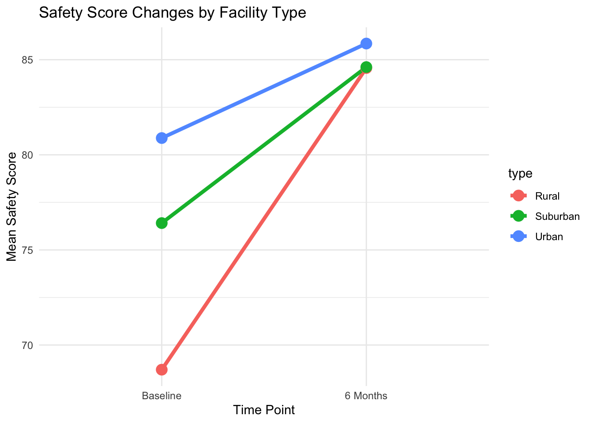

# Compare Factor A at each level of Factor B
emm <- emmeans(model, ~ A | B)
pairs(emm, adjust = "tukey")
# Compare Factor B at each level of Factor A
emm <- emmeans(model, ~ B | A)
pairs(emm, adjust = "tukey")ANOVA 2: Two-Way ANOVA (Practice Activities)
MBA642: Business Analytics in Healthcare Management
1 Overview
In this practice session, you will apply two-way ANOVA techniques learned in the lecture. This is a learning activity designed to help you gain hands-on experience with analyzing factorial designs in healthcare contexts.
What you’ll practice:
- Two-way between-subjects ANOVA
- Two-way within-subjects ANOVA
- Mixed design ANOVA
- Interaction plots
- Simple effects analysis using
emmeans
Format: Fill-in-the-blank code sections (marked with ___)
Instructions:
- Complete the code by replacing
___with appropriate values - Run each chunk to verify your analyses
- Answer the interpretation questions
- Compare your results with the solutions at the end
Note: This practice includes both lecture examples (Activities 1-5) that you code along with during class, and practice activities (Activities 6-10) for independent work.
2 Recap: Key Concepts
2.1 Two-Way ANOVA Designs
| Design | Factor A | Factor B | Example | R Formula |
|---|---|---|---|---|
| Between-Subjects | Different subjects | Different subjects | Treatment × Severity | aov(y ~ A * B) |
| Within-Subjects | Same subjects | Same subjects | Medication × Time | aov(y ~ A * B + Error(id/(A*B))) |
| Mixed | Different subjects | Same subjects | Program × Time | aov(y ~ A * B + Error(id/B)) |
2.2 Three Effects Tested
- Main effect of Factor A: Does Factor A affect the outcome (averaging across Factor B)?
- Main effect of Factor B: Does Factor B affect the outcome (averaging across Factor A)?
- Interaction A × B: Does the effect of A depend on the level of B?
2.3 Interaction Patterns
- No interaction: Parallel lines (effect of A is constant across levels of B)
- Ordinal interaction: Converging/diverging lines (effect of A varies in magnitude)
- Disordinal interaction: Crossing lines (effect of A reverses direction)
2.4 Simple Effects Analysis
When interaction is significant, use emmeans to examine effects at specific levels:
3 Common Errors and How to Fix Them
3.1 Error 1: “object not found”
Cause: You didn’t run the data generation chunk
Fix: Scroll up and run the chunk that creates the dataset for that activity
3.2 Error 2: Incorrect Error term in repeated measures
# ❌ Wrong (missing Error term):
aov(score ~ medication * time, data = within_data)
# ✅ Right (within-subjects design):
aov(score ~ medication * time + Error(patient_id/(medication * time)), data = within_data)
# ✅ Right (mixed design):
aov(score ~ program * time + Error(nurse_id/time), data = mixed_data)3.3 Error 3: Factor not properly defined
Cause: Variable is numeric instead of factor
Fix: Use factor() to convert:
data <- data %>%
mutate(severity = factor(severity, levels = c("Mild", "Moderate", "Severe")))3.4 Error 4: emmeans formula syntax
# ❌ Wrong:
emmeans(model, treatment | severity)
# ✅ Right (use tilde ~):
emmeans(model, ~ treatment | severity)4 Part 1: Between-Subjects ANOVA
4.1 Activity 1: Treatment × Disease Severity
Scenario: A clinical trial compares two treatments (Standard vs. Novel) for chronic pain across three severity levels (Mild, Moderate, Severe). Does treatment effectiveness depend on disease severity?
4.1.1 Generate Data
n_per_cell <- 15
pain_data <- expand.grid(
treatment = c("Standard", "Novel"),
severity = c("Mild", "Moderate", "Severe"),
subject = 1:n_per_cell
) %>%
mutate(
base = case_when(
severity == "Mild" ~ 70,
severity == "Moderate" ~ 55,
severity == "Severe" ~ 40
),
treatment_effect = case_when(
treatment == "Standard" ~ 0,
treatment == "Novel" & severity == "Mild" ~ 5,
treatment == "Novel" & severity == "Moderate" ~ 12,
treatment == "Novel" & severity == "Severe" ~ 22
),
pain_reduction = base + treatment_effect + rnorm(n(), 0, 6)
) %>%
mutate(
severity = factor(severity, levels = c("Mild", "Moderate", "Severe")),
treatment = factor(treatment, levels = c("Standard", "Novel"))
)4.1.2 Task 1.1: Create Interaction Plot
# Calculate means for each treatment-severity combination
plot_data <- pain_data %>%
group_by(___, ___) %>%
summarise(mean = mean(___), .groups = "drop")
# Create interaction plot
ggplot(plot_data, aes(x = ___, y = ___,
color = ___, group = ___)) +
geom_line(linewidth = 1.5) +
geom_point(size = 4) +
labs(title = "Interaction Plot: Treatment × Severity",
x = "___",
y = "___",
color = "___") +
theme_minimal()Question: Do the lines appear parallel, converging, or crossing? What does this suggest about interaction?
Your answer:
4.1.3 Task 1.2: Run Two-Way ANOVA
# Two-way between-subjects ANOVA
anova_pain <- aov(___ ~ ___ * ___, data = pain_data)
summary(___)Question: Which effects are significant (p < 0.05)? Is the interaction significant?
Your answer:
4.1.4 Task 1.3: Simple Effects Analysis
# Get estimated marginal means
emm <- emmeans(___, ~ ___ | ___)
# Test simple effects
pairs(emm, adjust = "___")Question: At which severity levels does the Novel treatment significantly outperform Standard treatment?
Your answer:
4.2 Activity 2: Training Method × Experience Level
Scenario: A hospital evaluates two training methods (Lecture vs. Simulation) for medication safety across three experience levels (Novice, Intermediate, Expert).
4.2.1 Generate Data
n_cell <- 12
training_data <- expand.grid(
method = c("Lecture", "Simulation"),
experience = c("Novice", "Intermediate", "Expert"),
subject = 1:n_cell
) %>%
mutate(
score = case_when(
method == "Lecture" & experience == "Novice" ~ 68,
method == "Lecture" & experience == "Intermediate" ~ 78,
method == "Lecture" & experience == "Expert" ~ 88,
method == "Simulation" & experience == "Novice" ~ 82,
method == "Simulation" & experience == "Intermediate" ~ 80,
method == "Simulation" & experience == "Expert" ~ 79
) + rnorm(n(), 0, 4),
experience = factor(experience, levels = c("Novice", "Intermediate", "Expert"))
)4.2.2 Task 2.1: Create Interaction Plot
training_data %>%
group_by(___, ___) %>%
summarise(mean = mean(___), .groups = "drop") %>%
ggplot(aes(x = ___, y = ___, color = ___, group = ___)) +
geom_line(linewidth = 1.5) +
geom_point(size = 4) +
labs(title = "Training Method × Experience Interaction",
x = "___",
y = "___") +
theme_minimal()Question: Describe the interaction pattern. Does one method work better for all experience levels?
Your answer:
4.2.3 Task 2.2: Run ANOVA and Simple Effects
# ANOVA
anova_training <- aov(___ ~ ___ * ___, data = training_data)
summary(___)
# Simple effects
emm_train <- emmeans(___, ~ ___ | ___)
pairs(___, adjust = "tukey")Question: Which training method is better for novice nurses? For expert nurses?
Your answer:
4.3 Activity 3: Intervention × Facility Type (Practice)
Scenario: A health system evaluates care transition programs (Standard vs. Enhanced) on readmission rates across facility types (Urban Academic, Suburban Community, Rural Critical Access).
4.3.1 Generate Data
n_cell <- 10
intervention_data <- expand.grid(
program = c("Standard Discharge", "Enhanced Transition"),
facility = c("Urban Academic", "Suburban Community", "Rural Critical Access"),
id = 1:n_cell
) %>%
mutate(
readmit_rate = case_when(
program == "Standard Discharge" & facility == "Urban Academic" ~ 14,
program == "Standard Discharge" & facility == "Suburban Community" ~ 12,
program == "Standard Discharge" & facility == "Rural Critical Access" ~ 16,
program == "Enhanced Transition" & facility == "Urban Academic" ~ 13,
program == "Enhanced Transition" & facility == "Suburban Community" ~ 9,
program == "Enhanced Transition" & facility == "Rural Critical Access" ~ 8
) + rnorm(n(), 0, 1.5)
)4.3.2 Your Code Here
# 1. Create interaction plot
# 2. Run two-way ANOVA
# 3. Simple effects analysis if interaction is significantQuestion: Which facility type benefits most from the Enhanced Transition program?
Your answer:
4.4 Activity 4: Medication × Age Group (Practice)
Scenario: Compare two pain medications (Drug A vs. Drug B) across three age groups (Young 18-40, Middle 41-65, Older 65+) on pain relief scores.
4.4.1 Generate Data
n_cell <- 15
medication_data <- expand.grid(
medication = c("Drug A", "Drug B"),
age_group = c("Young (18-40)", "Middle (41-65)", "Older (65+)"),
patient = 1:n_cell
) %>%
mutate(
pain_relief = case_when(
medication == "Drug A" ~ 55 + rnorm(n(), 0, 6),
medication == "Drug B" & age_group == "Young (18-40)" ~ 58 + rnorm(n(), 0, 6),
medication == "Drug B" & age_group == "Middle (41-65)" ~ 68 + rnorm(n(), 0, 6),
medication == "Drug B" & age_group == "Older (65+)" ~ 78 + rnorm(n(), 0, 6)
)
)4.4.2 Your Code Here
# 1. Create interaction plot
# 2. Run ANOVA
# 3. Simple effects analysisQuestion: Does Drug B work equally well for all age groups?
Your answer:
5 Part 2: Within-Subjects ANOVA
5.1 Activity 5: Medication Type × Time of Day
Scenario: The same 20 patients receive three medications (Med A, Med B, Med C) at two times (Morning, Evening). Does medication effectiveness depend on time of administration?
5.1.1 Generate Data
n_patients <- 20
within_data <- expand.grid(
patient_id = 1:n_patients,
medication = c("Med A", "Med B", "Med C"),
time = c("Morning", "Evening")
) %>%
mutate(
patient_effect = rep(rnorm(n_patients, 0, 5), 6),
fixed = case_when(
medication == "Med A" & time == "Morning" ~ 63,
medication == "Med A" & time == "Evening" ~ 72,
medication == "Med B" & time == "Morning" ~ 70,
medication == "Med B" & time == "Evening" ~ 71,
medication == "Med C" & time == "Morning" ~ 77,
medication == "Med C" & time == "Evening" ~ 65
),
effectiveness = fixed + patient_effect + rnorm(n(), 0, 3)
)5.1.2 Task 5.1: Create Interaction Plot
within_data %>%
group_by(___, ___) %>%
summarise(mean = mean(___), .groups = "drop") %>%
ggplot(aes(x = ___, y = ___, color = ___, group = ___)) +
geom_line(linewidth = 1.5) +
geom_point(size = 4) +
labs(title = "Medication Effectiveness by Time of Day",
x = "___",
y = "___") +
theme_minimal()5.1.3 Task 5.2: Run Within-Subjects ANOVA
Important: For within-subjects design, include Error term!
# Two-way within-subjects ANOVA
# Note the Error term for repeated measures
within_anova <- aov(___ ~ ___ * ___ + Error(___/(___*___)),
data = within_data)
summary(___)5.1.4 Task 5.3: Simple Effects
# Compare time at each medication level
emm_within <- emmeans(___, ~ ___ | ___)
pairs(___, adjust = "tukey")Question: For which medications does timing matter?
Your answer:
5.2 Activity 6: Task Type × Shift Period (Practice)
Scenario: The same 15 nurses perform two task types (Documentation, Patient Care) at three shift periods (Beginning, Middle, End). Does performance change differently for different tasks?
5.2.1 Generate Data
n_nurses <- 15
task_data <- expand.grid(
nurse_id = 1:n_nurses,
task = c("Documentation", "Patient Care"),
period = c("Beginning", "Middle", "End")
) %>%
mutate(
nurse_effect = rep(rnorm(n_nurses, 0, 4), 6),
fixed = case_when(
task == "Documentation" & period == "Beginning" ~ 90,
task == "Documentation" & period == "Middle" ~ 82,
task == "Documentation" & period == "End" ~ 70,
task == "Patient Care" & period == "Beginning" ~ 88,
task == "Patient Care" & period == "Middle" ~ 85,
task == "Patient Care" & period == "End" ~ 80
),
performance = fixed + nurse_effect + rnorm(n(), 0, 3),
period = factor(period, levels = c("Beginning", "Middle", "End"))
)5.2.2 Your Code Here
# 1. Interaction plot
# 2. Within-subjects ANOVA (remember Error term!)
# 3. Simple effects analysisQuestion: Does documentation performance decline more than patient care performance over the shift?
Your answer:
6 Part 3: Mixed Design ANOVA
6.1 Activity 7: Training Program × Assessment Time
Scenario: Nurses are randomly assigned to one of three training programs (Traditional, Simulation, Blended) and tested at three times (Pre, Post, 3 Months). Between-subjects: program; Within-subjects: time.
6.1.1 Generate Data
n_per_group <- 20
mixed_data <- expand.grid(
nurse_id = 1:(n_per_group * 3),
time = c("Pre", "Post", "3 Months")
) %>%
mutate(
program = rep(rep(c("Traditional", "Simulation", "Blended"),
each = n_per_group), 3),
nurse_effect = rep(rnorm(n_per_group * 3, 0, 4), 3),
fixed = case_when(
program == "Traditional" & time == "Pre" ~ 65,
program == "Traditional" & time == "Post" ~ 75,
program == "Traditional" & time == "3 Months" ~ 66,
program == "Simulation" & time == "Pre" ~ 65,
program == "Simulation" & time == "Post" ~ 84,
program == "Simulation" & time == "3 Months" ~ 79,
program == "Blended" & time == "Pre" ~ 65,
program == "Blended" & time == "Post" ~ 88,
program == "Blended" & time == "3 Months" ~ 85
),
score = fixed + nurse_effect + rnorm(n(), 0, 3),
time = factor(time, levels = c("Pre", "Post", "3 Months"))
)6.1.2 Task 7.1: Interaction Plot
mixed_data %>%
group_by(___, ___) %>%
summarise(mean = mean(___), .groups = "drop") %>%
ggplot(aes(x = ___, y = ___, color = ___, group = ___)) +
geom_line(linewidth = 1.5) +
geom_point(size = 4) +
labs(title = "Competency Trajectories by Training Program",
x = "___",
y = "___") +
theme_minimal()6.1.3 Task 7.2: Mixed Design ANOVA
Important: Error term only includes within-subjects factor (time)!
# Mixed design ANOVA
# Between: program, Within: time
mixed_anova <- aov(___ ~ ___ * ___ + Error(___/___),
data = mixed_data)
summary(___)6.1.4 Task 7.3: Simple Effects - Programs at Each Time
# Compare programs at each time point
emm_mixed <- emmeans(___, ~ ___ | ___)
pairs(___, adjust = "tukey")6.1.5 Task 7.4: Simple Effects - Time Within Each Program
# Compare time points within each program
emm_time <- emmeans(___, ~ ___ | ___)
pairs(___, adjust = "tukey")Question: Which programs maintain learning gains at 3 months? Which show decay?
Your answer:
6.2 Activity 8: Diabetes Intervention × Measurement Occasions
Scenario: Patients are assigned to Usual Care or Intensive Education (between-subjects) and HbA1c is measured at Baseline, 3 Months, 6 Months (within-subjects).
6.2.1 Generate Data
n_group <- 25
diabetes_mixed <- expand.grid(
patient_id = 1:(n_group * 2),
time = c("Baseline", "3 Months", "6 Months")
) %>%
mutate(
group = rep(rep(c("Usual Care", "Intensive Education"), each = n_group), 3),
patient_effect = rep(rnorm(n_group * 2, 0, 0.5), 3),
fixed = case_when(
group == "Usual Care" & time == "Baseline" ~ 8.5,
group == "Usual Care" & time == "3 Months" ~ 8.3,
group == "Usual Care" & time == "6 Months" ~ 8.2,
group == "Intensive Education" & time == "Baseline" ~ 8.5,
group == "Intensive Education" & time == "3 Months" ~ 8.0,
group == "Intensive Education" & time == "6 Months" ~ 7.1
),
hba1c = fixed + patient_effect + rnorm(n(), 0, 0.3),
time = factor(time, levels = c("Baseline", "3 Months", "6 Months"))
)6.2.2 Your Code Here
# 1. Interaction plot
# 2. Mixed ANOVA
# 3. Simple effects: groups at each time pointQuestion: At which time point does the Intensive Education group show significant improvement?
Your answer:
6.3 Activity 9: Therapy Type × Session Number (Practice)
Scenario: Patients are assigned to CBT or Mindfulness therapy (between-subjects) and anxiety is measured at Session 1, Session 3, Session 5 (within-subjects).
6.3.1 Generate Data
n_group <- 18
therapy_data <- expand.grid(
patient_id = 1:(n_group * 2),
session = c("Session 1", "Session 3", "Session 5")
) %>%
mutate(
therapy = rep(rep(c("CBT", "Mindfulness"), each = n_group), 3),
patient_effect = rep(rnorm(n_group * 2, 0, 4), 3),
fixed = case_when(
therapy == "CBT" & session == "Session 1" ~ 65,
therapy == "CBT" & session == "Session 3" ~ 48,
therapy == "CBT" & session == "Session 5" ~ 42,
therapy == "Mindfulness" & session == "Session 1" ~ 65,
therapy == "Mindfulness" & session == "Session 3" ~ 55,
therapy == "Mindfulness" & session == "Session 5" ~ 40
),
anxiety = fixed + patient_effect + rnorm(n(), 0, 3),
session = factor(session, levels = c("Session 1", "Session 3", "Session 5"))
)6.3.2 Your Code Here
# 1. Interaction plot
# 2. Mixed ANOVA
# 3. Simple effects analysisQuestion: Which therapy shows faster initial improvement? Do they converge by Session 5?
Your answer:
6.4 Activity 10: Facility Type × Time (Practice)
Scenario: Three facility types (Urban, Suburban, Rural) implement a safety initiative (between-subjects) and safety scores are measured at Baseline and 6 Months (within-subjects).
6.4.1 Generate Data
n_facilities <- 15
safety_data <- expand.grid(
facility_id = 1:(n_facilities * 3),
time = c("Baseline", "6 Months")
) %>%
mutate(
type = rep(rep(c("Urban", "Suburban", "Rural"), each = n_facilities), 2),
facility_effect = rep(rnorm(n_facilities * 3, 0, 3), 2),
fixed = case_when(
type == "Urban" & time == "Baseline" ~ 80,
type == "Urban" & time == "6 Months" ~ 85,
type == "Suburban" & time == "Baseline" ~ 78,
type == "Suburban" & time == "6 Months" ~ 86,
type == "Rural" & time == "Baseline" ~ 68,
type == "Rural" & time == "6 Months" ~ 84
),
score = fixed + facility_effect + rnorm(n(), 0, 2),
time = factor(time, levels = c("Baseline", "6 Months"))
)6.4.2 Your Code Here
# 1. Interaction plot
# 2. Mixed ANOVA
# 3. Simple effectsQuestion: Which facility type shows the greatest improvement? Why might this be important for resource allocation?
Your answer:
7 Summary
7.1 What You’ve Practiced
- ✓ Between-subjects two-way ANOVA (different participants in each cell)
- ✓ Within-subjects two-way ANOVA (same participants in all conditions)
- ✓ Mixed design ANOVA (one between, one within factor)
- ✓ Creating interaction plots to visualize factorial designs
- ✓ Interpreting main effects and interactions
- ✓ Conducting simple effects analysis with
emmeans
7.2 Key Formulas Reference
7.2.1 Between-Subjects ANOVA
aov(outcome ~ factorA * factorB, data = data)7.2.2 Within-Subjects ANOVA
aov(outcome ~ factorA * factorB + Error(subject_id/(factorA * factorB)), data = data)7.2.3 Mixed Design ANOVA
# Between: factorA, Within: factorB
aov(outcome ~ factorA * factorB + Error(subject_id/factorB), data = data)7.2.4 Simple Effects
emm <- emmeans(model, ~ factorA | factorB) # A at each level of B
pairs(emm, adjust = "tukey")8 Solutions
Solutions are provided below. Try to complete each activity independently before checking the solutions!
8.1 Activity 1 Solutions
8.1.1 Task 1.1: Interaction Plot
Code
plot_data <- pain_data %>%
group_by(treatment, severity) %>%
summarise(mean = mean(pain_reduction), .groups = "drop")
ggplot(plot_data, aes(x = severity, y = mean,
color = treatment, group = treatment)) +
geom_line(linewidth = 1.5) +
geom_point(size = 4) +
labs(title = "Interaction Plot: Treatment × Severity",
x = "Disease Severity",
y = "Mean Pain Reduction",
color = "Treatment") +
theme_minimal()
The lines converge, suggesting an ordinal interaction where the Novel treatment’s benefit increases with severity.
8.1.2 Task 1.2: ANOVA
Code
anova_pain <- aov(pain_reduction ~ treatment * severity, data = pain_data)
summary(anova_pain) Df Sum Sq Mean Sq F value Pr(>F)
treatment 1 5053 5053 140.65 < 2e-16 ***
severity 2 6736 3368 93.74 < 2e-16 ***
treatment:severity 2 1011 505 14.06 5.39e-06 ***
Residuals 84 3018 36
---
Signif. codes: 0 '***' 0.001 '**' 0.01 '*' 0.05 '.' 0.1 ' ' 1All three effects are significant: treatment, severity, and their interaction.
8.1.3 Task 1.3: Simple Effects
Code
emm <- emmeans(anova_pain, ~ treatment | severity)
pairs(emm, adjust = "tukey")severity = Mild:
contrast estimate SE df t.ratio p.value
Standard - Novel -7.13 2.19 84 -3.258 0.0016
severity = Moderate:
contrast estimate SE df t.ratio p.value
Standard - Novel -14.32 2.19 84 -6.544 <0.0001
severity = Severe:
contrast estimate SE df t.ratio p.value
Standard - Novel -23.51 2.19 84 -10.740 <0.0001The Novel treatment significantly outperforms Standard at all severity levels, with the largest effect for Severe patients.
8.2 Activity 2 Solutions
8.2.1 Task 2.1: Interaction Plot
Code
training_data %>%
group_by(method, experience) %>%
summarise(mean = mean(score), .groups = "drop") %>%
ggplot(aes(x = experience, y = mean, color = method, group = method)) +
geom_line(linewidth = 1.5) +
geom_point(size = 4) +
labs(title = "Training Method × Experience Interaction",
x = "Experience Level",
y = "Mean Competency Score") +
theme_minimal()
The lines cross, indicating a disordinal interaction. Simulation is better for novices, while Lecture is better for experts.
8.2.2 Task 2.2: ANOVA and Simple Effects
Code
anova_training <- aov(score ~ method * experience, data = training_data)
summary(anova_training) Df Sum Sq Mean Sq F value Pr(>F)
method 1 179.1 179.1 10.18 0.00217 **
experience 2 993.0 496.5 28.22 1.39e-09 ***
method:experience 2 1586.6 793.3 45.09 4.52e-13 ***
Residuals 66 1161.2 17.6
---
Signif. codes: 0 '***' 0.001 '**' 0.01 '*' 0.05 '.' 0.1 ' ' 1Code
emm_train <- emmeans(anova_training, ~ method | experience)
pairs(emm_train, adjust = "tukey")experience = Novice:
contrast estimate SE df t.ratio p.value
Lecture - Simulation -14.41 1.71 66 -8.414 <0.0001
experience = Intermediate:
contrast estimate SE df t.ratio p.value
Lecture - Simulation -3.63 1.71 66 -2.120 0.0378
experience = Expert:
contrast estimate SE df t.ratio p.value
Lecture - Simulation 8.57 1.71 66 5.007 <0.0001Simulation is significantly better for Novice and Intermediate nurses, while Lecture is better for Expert nurses.
8.3 Activity 3 Solutions
Code
# Interaction plot
intervention_data %>%
group_by(program, facility) %>%
summarise(mean = mean(readmit_rate), .groups = "drop") %>%
ggplot(aes(x = facility, y = mean, color = program, group = program)) +
geom_line(linewidth = 1.5) +
geom_point(size = 4) +
labs(title = "Readmission Rates by Program and Facility Type",
x = "Facility Type",
y = "Mean Readmission Rate (%)") +
theme_minimal() +
theme(axis.text.x = element_text(angle = 45, hjust = 1))
Code
# ANOVA
anova_int <- aov(readmit_rate ~ program * facility, data = intervention_data)
summary(anova_int) Df Sum Sq Mean Sq F value Pr(>F)
program 1 204.6 204.60 103.40 3.77e-14 ***
facility 2 123.2 61.62 31.14 1.01e-09 ***
program:facility 2 227.7 113.86 57.54 4.13e-14 ***
Residuals 54 106.8 1.98
---
Signif. codes: 0 '***' 0.001 '**' 0.01 '*' 0.05 '.' 0.1 ' ' 1Code
# Simple effects
emmeans(anova_int, ~ program | facility) %>% pairs(adjust = "tukey")facility = Urban Academic:
contrast estimate SE df t.ratio p.value
Standard Discharge - Enhanced Transition -0.0362 0.629 54 -0.058 0.9543
facility = Suburban Community:
contrast estimate SE df t.ratio p.value
Standard Discharge - Enhanced Transition 2.0450 0.629 54 3.251 0.0020
facility = Rural Critical Access:
contrast estimate SE df t.ratio p.value
Standard Discharge - Enhanced Transition 9.0708 0.629 54 14.419 <0.0001Rural Critical Access hospitals benefit most from the Enhanced Transition program, showing the largest reduction in readmission rates.
8.4 Activity 4 Solutions
Code
# Interaction plot
medication_data %>%
group_by(medication, age_group) %>%
summarise(mean = mean(pain_relief), .groups = "drop") %>%
ggplot(aes(x = age_group, y = mean, color = medication, group = medication)) +
geom_line(linewidth = 1.5) +
geom_point(size = 4) +
labs(title = "Pain Relief by Medication and Age Group",
x = "Age Group",
y = "Mean Pain Relief Score") +
theme_minimal() +
theme(axis.text.x = element_text(angle = 45, hjust = 1))
Code
# ANOVA
anova_med <- aov(pain_relief ~ medication * age_group, data = medication_data)
summary(anova_med) Df Sum Sq Mean Sq F value Pr(>F)
medication 1 3405 3405 86.74 1.39e-14 ***
age_group 2 1698 849 21.62 2.66e-08 ***
medication:age_group 2 1690 845 21.52 2.85e-08 ***
Residuals 84 3298 39
---
Signif. codes: 0 '***' 0.001 '**' 0.01 '*' 0.05 '.' 0.1 ' ' 1Code
# Simple effects
emmeans(anova_med, ~ medication | age_group) %>% pairs(adjust = "tukey")age_group = Young (18-40):
contrast estimate SE df t.ratio p.value
Drug A - Drug B -3.05 2.29 84 -1.334 0.1859
age_group = Middle (41-65):
contrast estimate SE df t.ratio p.value
Drug A - Drug B -9.97 2.29 84 -4.356 <0.0001
age_group = Older (65+):
contrast estimate SE df t.ratio p.value
Drug A - Drug B -23.89 2.29 84 -10.441 <0.0001Drug B shows increasing effectiveness with age, working best for older adults.
8.5 Activity 5 Solutions
8.5.1 Task 5.1: Interaction Plot
Code
within_data %>%
group_by(medication, time) %>%
summarise(mean = mean(effectiveness), .groups = "drop") %>%
ggplot(aes(x = medication, y = mean, color = time, group = time)) +
geom_line(linewidth = 1.5) +
geom_point(size = 4) +
labs(title = "Medication Effectiveness by Time of Day",
x = "Medication",
y = "Mean Effectiveness Score") +
theme_minimal()
8.5.2 Task 5.2: Within-Subjects ANOVA
Code
within_anova <- aov(effectiveness ~ medication * time +
Error(patient_id/(medication * time)),
data = within_data)
summary(within_anova)
Error: patient_id
Df Sum Sq Mean Sq F value Pr(>F)
Residuals 1 422.1 422.1
Error: patient_id:medication
Df Sum Sq Mean Sq
medication 2 307.2 153.6
Error: patient_id:time
Df Sum Sq Mean Sq
time 1 0.3766 0.3766
Error: patient_id:medication:time
Df Sum Sq Mean Sq
medication:time 2 1488 743.9
Error: Within
Df Sum Sq Mean Sq F value Pr(>F)
medication 2 86 43.05 1.343 0.26548
time 1 18 18.15 0.566 0.45342
medication:time 2 366 182.88 5.704 0.00442 **
Residuals 108 3463 32.06
---
Signif. codes: 0 '***' 0.001 '**' 0.01 '*' 0.05 '.' 0.1 ' ' 18.5.3 Task 5.3: Simple Effects
Code
emm_within <- emmeans(within_anova, ~ time | medication)
pairs(emm_within, adjust = "tukey")medication = Med A:
contrast estimate SE df t.ratio p.value
Morning - Evening -7.02 3.72 108 -1.888 0.0617
medication = Med B:
contrast estimate SE df t.ratio p.value
Morning - Evening 1.14 3.72 108 0.307 0.7593
medication = Med C:
contrast estimate SE df t.ratio p.value
Morning - Evening 10.73 3.72 108 2.884 0.0047Timing matters for Med A (better in evening) and Med C (better in morning), but not for Med B.
8.6 Activity 6 Solutions
Code
# Interaction plot
task_data %>%
group_by(task, period) %>%
summarise(mean = mean(performance), .groups = "drop") %>%
ggplot(aes(x = period, y = mean, color = task, group = task)) +
geom_line(linewidth = 1.5) +
geom_point(size = 4) +
labs(title = "Performance by Task and Shift Period",
x = "Shift Period",
y = "Mean Performance Score") +
theme_minimal()
Code
# Within-subjects ANOVA
task_anova <- aov(performance ~ task * period + Error(nurse_id/(task * period)),
data = task_data)
summary(task_anova)
Error: nurse_id
Df Sum Sq Mean Sq F value Pr(>F)
Residuals 1 76.64 76.64
Error: nurse_id:task
Df Sum Sq Mean Sq
task 1 195.9 195.9
Error: nurse_id:period
Df Sum Sq Mean Sq
period 2 2230 1115
Error: nurse_id:task:period
Df Sum Sq Mean Sq
task:period 2 375.7 187.8
Error: Within
Df Sum Sq Mean Sq F value Pr(>F)
task 1 59.1 59.1 1.920 0.1698
period 2 659.3 329.7 10.704 7.8e-05 ***
task:period 2 222.7 111.3 3.615 0.0315 *
Residuals 78 2402.3 30.8
---
Signif. codes: 0 '***' 0.001 '**' 0.01 '*' 0.05 '.' 0.1 ' ' 1Code
# Simple effects
emmeans(task_anova, ~ task | period) %>% pairs(adjust = "tukey")period = Beginning:
contrast estimate SE df t.ratio p.value
Documentation - Patient Care 2.768 4.26 78 0.649 0.5182
period = Middle:
contrast estimate SE df t.ratio p.value
Documentation - Patient Care -0.411 4.26 78 -0.096 0.9234
period = End:
contrast estimate SE df t.ratio p.value
Documentation - Patient Care -12.592 4.26 78 -2.953 0.0042Documentation performance declines significantly more than patient care performance as the shift progresses.
8.7 Activity 7 Solutions
8.7.1 Tasks 7.1-7.4: Complete Analysis
Code
# Interaction plot
mixed_data %>%
group_by(program, time) %>%
summarise(mean = mean(score), .groups = "drop") %>%
ggplot(aes(x = time, y = mean, color = program, group = program)) +
geom_line(linewidth = 1.5) +
geom_point(size = 4) +
labs(title = "Competency Trajectories by Training Program",
x = "Assessment Time",
y = "Mean Competency Score") +
theme_minimal()
Code
# Mixed ANOVA
mixed_anova <- aov(score ~ program * time + Error(nurse_id/time),
data = mixed_data)
summary(mixed_anova)
Error: nurse_id
Df Sum Sq Mean Sq
program 1 3148 3148
Error: nurse_id:time
Df Sum Sq Mean Sq
time 2 10751 5376
Error: Within
Df Sum Sq Mean Sq F value Pr(>F)
program 2 509 254.6 10.44 5.31e-05 ***
time 2 699 349.6 14.34 1.78e-06 ***
program:time 4 451 112.6 4.62 0.00145 **
Residuals 168 4096 24.4
---
Signif. codes: 0 '***' 0.001 '**' 0.01 '*' 0.05 '.' 0.1 ' ' 1Code
# Simple effects: programs at each time
emm_mixed <- emmeans(mixed_anova, ~ program | time)
pairs(emm_mixed, adjust = "tukey")time = Pre:
contrast estimate SE df t.ratio p.value
Blended - Simulation 1.163 2.71 168 0.430 0.9032
Blended - Traditional 0.262 4.69 168 0.056 0.9983
Simulation - Traditional -0.901 2.71 168 -0.333 0.9408
time = Post:
contrast estimate SE df t.ratio p.value
Blended - Simulation 3.769 2.71 168 1.393 0.3471
Blended - Traditional 10.416 4.69 168 2.221 0.0705
Simulation - Traditional 6.647 2.71 168 2.456 0.0398
time = 3 Months:
contrast estimate SE df t.ratio p.value
Blended - Simulation 8.296 2.71 168 3.065 0.0071
Blended - Traditional 23.765 4.69 168 5.068 <0.0001
Simulation - Traditional 15.469 2.71 168 5.715 <0.0001
P value adjustment: tukey method for comparing a family of 3 estimates Code
# Simple effects: time within each program
emm_time <- emmeans(mixed_anova, ~ time | program)
pairs(emm_time, adjust = "tukey")program = Blended:
contrast estimate SE df t.ratio p.value
Pre - Post -18.046 8.05 168 -2.242 0.0671
Pre - 3 Months -23.610 8.05 168 -2.934 0.0106
Post - 3 Months -5.564 8.05 168 -0.691 0.7689
program = Simulation:
contrast estimate SE df t.ratio p.value
Pre - Post -15.440 5.02 168 -3.077 0.0069
Pre - 3 Months -16.477 5.02 168 -3.284 0.0036
Post - 3 Months -1.036 5.02 168 -0.207 0.9768
program = Traditional:
contrast estimate SE df t.ratio p.value
Pre - Post -7.892 2.27 168 -3.484 0.0018
Pre - 3 Months -0.107 2.27 168 -0.047 0.9988
Post - 3 Months 7.786 2.27 168 3.436 0.0021
P value adjustment: tukey method for comparing a family of 3 estimates Simulation and Blended programs maintain gains at 3 months, while Traditional shows significant decay.
8.8 Activity 8 Solutions
Code
# Interaction plot
diabetes_mixed %>%
group_by(group, time) %>%
summarise(mean = mean(hba1c), .groups = "drop") %>%
ggplot(aes(x = time, y = mean, color = group, group = group)) +
geom_line(linewidth = 1.5) +
geom_point(size = 4) +
labs(title = "HbA1c Trajectories by Education Program",
x = "Time Point",
y = "Mean HbA1c (%)") +
theme_minimal()
Code
# Mixed ANOVA
diabetes_anova <- aov(hba1c ~ group * time + Error(patient_id/time),
data = diabetes_mixed)
summary(diabetes_anova)
Error: patient_id
Df Sum Sq Mean Sq
group 1 9.44 9.44
Error: patient_id:time
Df Sum Sq Mean Sq
time 2 22.58 11.29
Error: Within
Df Sum Sq Mean Sq F value Pr(>F)
group 1 0.45 0.4513 1.192 0.2768
time 2 0.09 0.0443 0.117 0.8896
group:time 2 2.23 1.1145 2.943 0.0559 .
Residuals 141 53.39 0.3786
---
Signif. codes: 0 '***' 0.001 '**' 0.01 '*' 0.05 '.' 0.1 ' ' 1Code
# Simple effects
emmeans(diabetes_anova, ~ group | time) %>% pairs(adjust = "tukey")time = Baseline:
contrast estimate SE df t.ratio p.value
Intensive Education - Usual Care 0.280 0.348 141 0.804 0.4229
time = 3 Months:
contrast estimate SE df t.ratio p.value
Intensive Education - Usual Care -0.057 0.348 141 -0.164 0.8702
time = 6 Months:
contrast estimate SE df t.ratio p.value
Intensive Education - Usual Care -0.882 0.348 141 -2.531 0.0125The Intensive Education group shows significant improvement by 6 months, reaching the target HbA1c of 7.0%.
8.9 Activity 9 Solutions
Code
# Interaction plot
therapy_data %>%
group_by(therapy, session) %>%
summarise(mean = mean(anxiety), .groups = "drop") %>%
ggplot(aes(x = session, y = mean, color = therapy, group = therapy)) +
geom_line(linewidth = 1.5) +
geom_point(size = 4) +
labs(title = "Anxiety Trajectories by Therapy Type",
x = "Session",
y = "Mean Anxiety Score") +
theme_minimal()
Code
# Mixed ANOVA
therapy_anova <- aov(anxiety ~ therapy * session + Error(patient_id/session),
data = therapy_data)
summary(therapy_anova)
Error: patient_id
Df Sum Sq Mean Sq
therapy 1 229.7 229.7
Error: patient_id:session
Df Sum Sq Mean Sq
session 2 8026 4013
Error: Within
Df Sum Sq Mean Sq F value Pr(>F)
therapy 1 258.0 258.0 9.299 0.00294 **
session 2 2053.3 1026.6 37.003 1e-12 ***
therapy:session 2 118.2 59.1 2.129 0.12432
Residuals 99 2746.7 27.7
---
Signif. codes: 0 '***' 0.001 '**' 0.01 '*' 0.05 '.' 0.1 ' ' 1Code
# Simple effects
emmeans(therapy_anova, ~ therapy | session) %>% pairs(adjust = "tukey")session = Session 1:
contrast estimate SE df t.ratio p.value
CBT - Mindfulness -2.24 3.52 99 -0.638 0.5249
session = Session 3:
contrast estimate SE df t.ratio p.value
CBT - Mindfulness -11.99 3.52 99 -3.410 0.0009
session = Session 5:
contrast estimate SE df t.ratio p.value
CBT - Mindfulness -4.34 3.52 99 -1.234 0.2203CBT shows faster initial improvement, but both therapies converge to similar levels by Session 5.
8.10 Activity 10 Solutions
Code
# Interaction plot
safety_data %>%
group_by(type, time) %>%
summarise(mean = mean(score), .groups = "drop") %>%
ggplot(aes(x = time, y = mean, color = type, group = type)) +
geom_line(linewidth = 1.5) +
geom_point(size = 4) +
labs(title = "Safety Score Changes by Facility Type",
x = "Time Point",
y = "Mean Safety Score") +
theme_minimal()
Code
# Mixed ANOVA
safety_anova <- aov(score ~ type * time + Error(facility_id/time),
data = safety_data)
summary(safety_anova)
Error: facility_id
Df Sum Sq Mean Sq
type 1 590.4 590.4
Error: facility_id:time
Df Sum Sq Mean Sq
time 1 2486 2486
Error: Within
Df Sum Sq Mean Sq F value Pr(>F)
type 2 95.6 47.81 2.953 0.0578 .
time 1 25.6 25.58 1.580 0.2123
type:time 2 65.3 32.66 2.017 0.1396
Residuals 82 1327.6 16.19
---
Signif. codes: 0 '***' 0.001 '**' 0.01 '*' 0.05 '.' 0.1 ' ' 1Code
# Simple effects
emmeans(safety_anova, ~ type | time) %>% pairs(adjust = "tukey")time = Baseline:
contrast estimate SE df t.ratio p.value
Rural - Suburban -7.788 2.55 82 -3.056 0.0084
Rural - Urban -12.339 4.42 82 -2.794 0.0176
Suburban - Urban -4.551 2.55 82 -1.786 0.1807
time = 6 Months:
contrast estimate SE df t.ratio p.value
Rural - Suburban -0.615 2.55 82 -0.241 0.9684
Rural - Urban -2.417 4.42 82 -0.547 0.8481
Suburban - Urban -1.802 2.55 82 -0.707 0.7600
P value adjustment: tukey method for comparing a family of 3 estimates Rural facilities show the greatest improvement (+16 points), suggesting the initiative is most beneficial where baseline safety infrastructure was weakest.